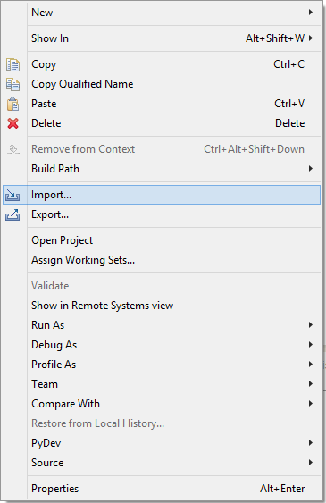
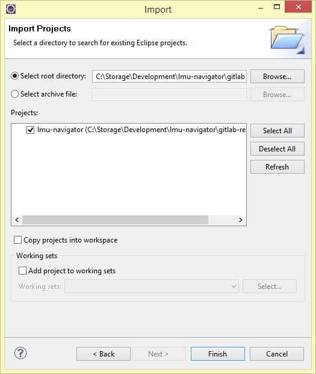
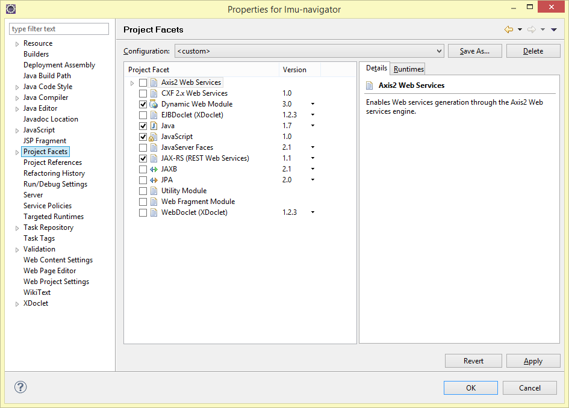
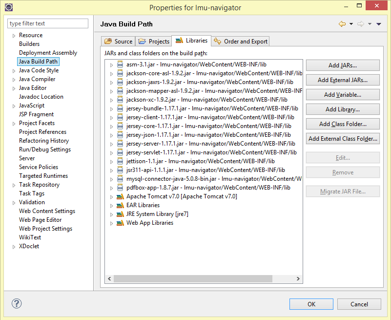
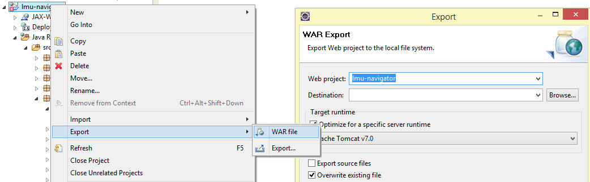

Server Dokumentation
Repository: https://github.com/lmu-navigator/server
Ausgangsbasis für den Server war die Praxisphase aus dem Praktikum Mobile und Verteilte Systeme im Wintersemester 2013/14. Dort haben wir einen RESTful Web Service mit Hilfe von Java, Tomcat, Jersey (JAX-RS) und MySQL aufgesetzt, hier die Folien zur damaligen Übung.
Übersicht: Installation Architektur (Struktur) REST API Deployment
Installation
Installation der Arbeitsumgebung, welche von 2013 bis Anfang 2015 verwendet wurde.
- Tomcat
- MySQL
- Apache
- Eclipse
Tomcat
- Tomcat Version: 7.0.42.0
- JVM Version: 1.7.0_21-b11
- OS Name: Windows 8, Version: 6.2, Architecture: amd64
MySQL
Beim MySQL Server (Version 5.0.11) wurden keine individuellen Anpassungen vorgenommen. Wir haben lokal mit der MySQL-Instanz gearbeitet, welche mit XAMPP mitgeliefert wurde.
Als Administrationsoberfläche haben wir PhpMyAdmin verwendet, welches ebenfalls mit XAMPP mitgeliefert wird.
Apache
Apache haben wir für PhpMyAdmin und zum Hosten von allen statischen Dateien (über Port 80) verwendet, da ein Tomcat Servlet mit mehreren 100 MB auf Windows zu Problemen und Abstürzen führt.
XAMPP
Die Installation von XAMPP ist optional. Sie erleichtert vor allem bei Windows Geräten die Installation von Apache, PHP, MySQL und PhpMyAdmin.
Eclipse
Eclipse Java EE IDE for Web Developers
(Juno Service Release 2, Build id: 20130225-0426)
)
Benötigte Plugins: Eclipse Web Tools Platform
Import des Projektes
-
GitHub Repo klonen
-
Eclipse installieren (Version siehe oben)
-
Projekt importieren 
-
General > Existing Projects into Workspace

-
Projekt hinzufügen 
Konfiguration von Eclipse
Sollte es zu Problemen bei dem Ausführen des Servlets kommen, kann es u.a. daran liegen, dass Eclipse das Projekt noch nicht als Dynamic Web Project erkennt. Hierfür müssen u.a. folgende Projekt-Einstellungen vorgenommen sein:
-
Java Version 1.6, da auf dem aktuellen Server (http://141.84.213.246:8080) nur Java 1.6 installiert ist.

-
Sicherstellen, dass die Facets Dynamic Web Module und JAXB ausgewählt sind. 
-
Und hier noch eine Übersicht der verwendeten JARs 
-
Sicherstellen, dass Tomcat auch als Runtime Environment zu Eclipse hinzugefügt wurde.
Architektur
- Erklärung des Datenmodells
- Erklärung der Module
- Wie die Module und Klassen zusammenhängen
- Wie man auf den Server zugreifen kann
Modell
Das Modell ist im Package de.lmu.navigator.server.model abgelegt. Für uns wichtig sind folgende Klassen: (mit Mapping von unserem Datenmodell zu den CSV-Dateien von der LMU)
City.java <-> 01_Stadt.csv
Street.java <-> 02_Strasse.csv
Building.java <-> 03_Bauwerk.csv
BuildingPart.java <-> 04_BauteilHaus.csv
Floor.java <-> 05_Geschoss.csv
Room.java <-> 06_Raum.csv
Zwischen den jeweiligen Modell-Hierarchien besteht eine 1-zu-N-Beziehung (von City zu Street, von Street zu Building, usw).
Packages
Der Java Tomcat-Server besteht aus folgenden fünf Packages:
de.lmu.navigator.server (REST API / Jersey)
de.lmu.navigator.server.data (Logik für Raumpositionierung)
de.lmu.navigator.server.database (MySQL Integration)
de.lmu.navigator.server.model (Datenmodell)
de.lmu.navigator.server.upload (CSV Importer)
Modell-Package
Das gerade beschriebene Datenmodell liegt im Package de.lmu.navigator.server.model vor. Dort liegen neben den oben beschriebenen Objekttypen noch ein paar weitere Klassen bereit:
Settings.java (Pfade wo PNGs/PDFs im Dateisystem liegen)
Version.java (Fortlaufende Numerierung für Versionskontrolle)
Zum Zeitpunkt des Praktikums haben wir auch noch Wegegraphen für das Indoor-Routing gespeichert, welcher in der aktuellen Version der App und des Servers gestrichen wurde. Für diesen Wegegraphen hatten wir folgende Klassen angelegt:
RoutingNode.java (Knoten)
RoutingEdge.java (Kante)
RoutingFloorConnection.java (Verbindet stockwerkübergreifend Knoten)
RoutingRoomConnection.java (Verbindet Räume mit Knoten)
Hauptmodul
Das Hauptmodul de.lmu.navigator.server definiert die REST API und stellt somit den Entry Point für die Server-Anwendung dar. Umgesetzt wurde dieser Teil mit der Java API for RESTful Services (JAX-RS) (Package javax.ws.rs). Für nähere Informationen zu Jersey (JAX-RS) siehe: https://jersey.java.net/documentation/latest/index.html
Das Mapping von REST URI zu den Getter und Setter Funktionen funktioniert recht intuitiv über Annotationen direkt im Code. An der Klasse selbst legt man fest, welches
@Path("/rooms")
public class Rooms {
@GET
@Produces("application/json")
public ArrayList<Room> getRoomsByRange(
@DefaultValue("") @QueryParam("code") String roomCode,
@DefaultValue("") @QueryParam("floor") String floorCode)
throws Exception {
...
}
}
Für die Klassen XX bis XX ist der Aufbau analog.
Als Datenbank-Anbindung haben wir jeweils die Klassen CityMySQL - RoomMySQL angelegt.
Datenbank
Als Datenbank haben wir uns für MySQL und als Administrationsoberfläche für PhpMyAdmin entschieden, da hierfür die meisten Vorkenntnisse vorhanden waren.
Die Architektur der Datenbank ist angelehnt an die Struktur der CSV-Dateien, welche wir für den Import vom Referat IV.1 der LMU München bekommen.
Ein vollständiger MySQL-Dump der Datenbank kann im privaten GitHub-Repository gefunden werden: https://github.com/lmu-navigator/data/tree/master/sql
Zur Veranschaulichung findet ihr hier die Struktur der MySQL Tabellen (Stand Februar 2015). Der aktuelle Stand wird
REST API
Im folgenden wird die REST Schnittstelle des Tomcat Servers beschrieben. Aktuell kann die REST-API für den Server unter folgender Adresse aufgerufen werden: http://141.84.213.246:8080/lmu-navigator/rest/
Für den Produktiveinsatz arbeiten wir vorerst mit statischen JSON-Dateien. Zum einen da sich der Datenbestand meist nur einmal pro Semester verändert, zum anderen da wir dadurch auf Server der LMU München zurückgreifen können. Die neu generierten JSON-Dateien werden bei jeder Verändernug (Veränderung der Versionsnummer /rest/version) erneut am Mobilgerät eingelesen. Die Aktualisierung ist einmal pro Semester in Rücksprache mit den Referaten geplant.
Nützliche Links für die Entwicklung: http://stackoverflow.com/q/630453/1402076 (PUT vs POST) http://goo.gl/C3FPyt (Advanced Rest Client / Chrome Plugin)
Statische JSON Dateien
Alle für die App relevanten Raum- und Gebäudedaten liegen auf folgendem Server der LMU vor:
TODO StaticServer URI
asdf
1_city.json
2_street.json
3_building.json
3_building_position.json
4_building_part.json
5_floor.json
6_room.json
version.json
Hier werden neben den JSON Dateien auch die Gebäudepläne im PNG- und PDF-Format gehosted. Ansprechpartner für diesen Server ist das Referat für Internetdienste.
REST Funktionalität des Tomcat Servers
GET /version
* liefert die aktuelle Version der Datenbasis
{"version":7,"timestamp":1409688383}
/cities
- GET /cities returns a list of all cities with LMU buildings
/streets
/buildings
/buildingparts
/floors
-
GET /floors/{floorCode} returns a single floor for the requested floor ID / code
-
GET /floors/{floorCode}/bordering returns all floors associated to the same mapUri (PDF file), excluding the floor itself, required for buildings like the main building (Geschwister-Scholl-Platz)
-
GET /floors returns all available floors from the database
-
GET /floors?code={floorCode}&buildingpart={buildingPartCode} returns all available floors from the database
/rooms
Besonderheiten: Es werden nur Räume als JSON ausgegeben, die eine gültige Position haben (PosX != 0 + PosY != 0) und sichtbar sind (hidden == 0). Nicht positionierte und deaktivierte Räume werden somit nicht zur App übertragen.
Deployment des Servers
Schritt für Schritt-Anleitung:
-
Zuerst in
de.lmu.navigator.server.database.Database.javadie FlagPRODUCTION_SERVERauftruesetzen, und nach dem Exportieren der WAR file wieder zurück auffalse(=development environment). -
Eclipse-Projekt als WAR-File exportieren 
-
WinSCP starten und am Server einloggen
-
Die WAR-Datei hochladen und nun folgende Kommandos ausführen
sudo rm webapps/lmu-navigator.war sudo rm webapps/lmu-navigator/ -r sudo mv lmu-navigator.war webapps/
Der Pfad für webapps variiert von System zu System. Auf dem aktuellen System weist er auf /var/lib/tomcat7/webapps.
Bei Problemen mit Tomcat auf dem 141.84.213.246-Server am besten mal in das GitLab-Wiki schauen.
Room Canvas
Manually updating the room positions of on the RoomsOverview servlet, e.g.: http://localhost:8080/lmu-navigator/data/rooms?floor=g650301
Features: Manual positioning of rooms cross iFrames Press the ESC key to abort the manual positioning and scroll back to top Right click: Pan Left click: select new position
Future Work
Auf den MEAN-Stack migrieren, Node.js für das Backend verwenden und Angular.js, Ember.js oder Backbone.js für das Frontend.